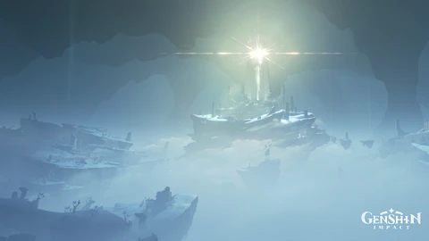

Inazuma · Ancient Civilizations
Enkanomiya
Enkanomiya is an underground region beneath Watatsumi Island. Its surviving records describe an ancient society, a period without sunlight, and the later arrival of the people who became Watatsumi’s ancestors.

A nation beneath Watatsumi
Enkanomiya is an underground region beneath Watatsumi Island. Its people lived in a deep cavern without normal sunlight, and their history is preserved through ruins, books, and the artificial light of the Dainichi Mikoshi.
Enkanomiya’s records are central to the wider lore because they preserve an early account of Teyvat’s divine order. They are also local history: the people faced their own rulers, rituals, and political struggles while trying to survive underground.
The Byakuyakoku Collection
The Byakuyakoku Collection is a set of books written by people from Enkanomiya. It includes the account called Before Sun and Moon, which describes an ancient world and the arrival of the Primordial One from the perspective of its author.
The book’s existence is canon, but its author is not an all-knowing narrator. The text itself uses uncertainty in places, so readers should not treat every claim in it as a confirmed fact unless later quests support it.
Orobashi and the surface
Orobashi led the people out of Enkanomiya and became the serpent god of Watatsumi. This move brought them into the world above, but it also created lasting connections and conflicts with Inazuma.
The people carried some traditions with them, while others remained in the underground ruins. The Moon-Bathed Deep and Enkanomiya quests help trace the transition without turning it into one simple migration story.
Dragonheirs and the deep past
Enkanomiya’s research into Bathysmal Vishaps and the Dragonheirs adds a second ancient history beneath the human one. These creatures are tied to elemental life and the world that existed before the current human nations.
When reading this material, keep the different periods in order: ancient dragon history, Enkanomiya’s human society, and Watatsumi’s later history. The ruins contain evidence from all three.
This is an original CoreGG reading guide, not an official HoYoverse article or a reproduction of the game text. Source links below identify the records used so you can check the original context.
Sources & references
Check these sources for the original game text and reference trail.